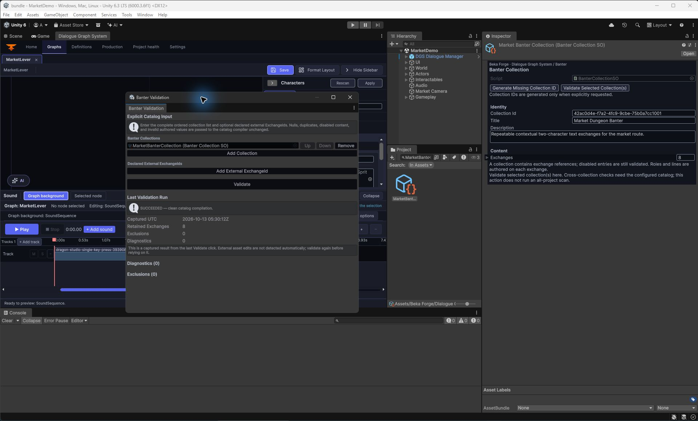

Set up contextual Banter
Get a working contextual line in the included Dungeon Market sample, then create your own exchanges and connect them to gameplay moments. Banter is authored content plus an initialized runtime host; creating an asset alone does not make it play.
First, see Banter working
- Let the DGS 4.0 project finish importing. In the Unity menu, open Tools > Beka Forge > Banter > Getting Started.
- Under Open the sample, click Open 2D Market Demo. The window opens
Assets/Beka Forge/Dialogue Graph System/Samples/2DMarketDemo/Scenes/MarketDemo.unity. - Press Play. Follow the scene guide and talk to the merchant. At the welcome and later market milestones, contextual Banter lines appear in the subtitle UI. Press R to reset the sample and try again.
Checkpoint: the line appears when its market trigger is submitted. The sample uses authored fallback text and subtitle presentation; it has no recorded Banter voice and does not demonstrate the optional Banter HUD.


Try your own exchange in the working sample
Use this path for your first custom Banter. The sample already supplies actors, subtitles, a profile, and a runtime host, so you can focus on the content. Save a copy of the sample assets before editing them.
- Exit Play Mode. In
Assets/Beka Forge/Dialogue Graph System/Samples/2DMarketDemo/Banter/Exchanges/, right-click and choose Create > Beka Forge > Banter > Exchange. Name itMyMarketGreeting. - Select it. Give it a title, keep it enabled, and set its content revision to
1. Set the trigger tomarket.welcomeand the category to Reaction. - Add a role with RoleId
merchantand required CharacterIDmarket-merchant. Add a second role with RoleIdplayerand required CharacterIDmarket-player. These exact character IDs match the sample's registered actors. - Add a line using Speaker Role
merchantand your own Fallback Text, then a reply using Speaker Roleplayer. Click Generate Missing Stable IDs, then Validate Exchange. Save the asset. - Select
Assets/Beka Forge/Dialogue Graph System/Samples/2DMarketDemo/Banter/MarketBanterCollection.asset. Add your exchange once to its Exchanges list. Temporarily disable the sample's built-inWelcomeexchange so this trigger has one eligible greeting. Validate the selected collection. - Open
MarketDemo.unityand enter Play Mode again. Move to the merchant and press E to talk. The sample submitsmarket.welcomewhen its merchant-talked state changes. - Look for your authored text in the contextual subtitle area. Press R to reset the sample, then talk again. Exit and re-enter Play Mode after changing the collection so the host initializes from the latest assets.
Checkpoint: your two-line exchange appears from the existing market trigger. Restore the built-in Welcome exchange and remove your test exchange from the sample collection when you have finished experimenting.
Create a small authoring kit
The fastest safe start is the built-in kit. It creates three validated authoring assets in a folder you choose; it does not create scene objects, register actors, or initialize runtime playback.
- Open Tools > Beka Forge > Banter > Getting Started.
- In New kit folder name, enter a new folder name, such as
TownBanter. - Click Choose parent and create kit, then select an existing parent folder inside your project's
Assetsfolder. The destination must be new. - Wait for the window to report Created and validated. Use Ping Exchange and the other Ping buttons to locate the created assets.
Checkpoint: the folder contains a BanterExchangeSO, a BanterCollectionSO, and a BanterDirectorProfileSO. The example exchange has two fallback-only lines and generic roles. Replace them with your own authored content before wiring a game host.
Author one useful exchange
Select the Exchange asset and edit its Inspector. For a first greeting, use a distinct trigger such as town.merchant.greeting, category Reaction, topic town.greeting, and a positive selection weight. Keep the exchange enabled.
- In Identity, give the exchange a clear title and description. Keep
contentRevisionat1or higher. - In Trigger / Selection, enter the trigger key your gameplay code will submit. Use Ambient only for the reserved
ambienttrigger; for a one-time world reaction, Reaction is a straightforward choice. - In Roles, add a role for each speaker. Each role has a RoleId, for example
merchantandplayer. When the role is bound to a DGS character, itsrequiredCharacterIdmust match that character asset's exactCharacterID. - In Lines, add at least one line. Choose its Speaker Role from the roles above and enter non-empty Fallback Text. Add another line if you want a short back-and-forth. Audio clips and localization variants are optional for this subtitle-first first pass.
- Click Generate Missing Stable IDs. This fills blank exchange and line IDs while preserving nonblank IDs. It is Undo-supported and does not save the asset for you.
merchant, its character may have CharacterID market_merchant, and the scene actor may use ActorId town-merchant-01. Do not paste one kind of ID into another field.Put it in a collection and validate it
- In the Project window, choose Create > Beka Forge > Banter > Collection.
- Name the collection, add your Exchange once to
exchanges, and use Generate Missing Collection ID if its stable ID is blank. - Select the Exchange and click Validate Exchange in its Inspector. Fix each reported issue, then validate again.
- Select the collections your host will use. Return to Tools > Beka Forge > Banter > Getting Started and click Validate selected collections, or open Tools > Beka Forge > Banter > Catalog Validation to configure the full ordered collection set explicitly.
Checkpoint: the exchange validator reports clean content, and catalog validation reports clean results for the exact collections you supplied. A clean single-exchange result does not validate other collections the host may load.

Connect a request to gameplay or dialogue
A dialogue graph and contextual Banter solve different jobs. DGS dialogue owns an authored conversation, its choices and graph actions. Banter is a separate, queued contextual exchange that your game requests at a moment such as opening a gate, finishing a quest step, or leaving a conversation. A graph action handler can submit a Banter request, but the request still needs an initialized Banter host and registered actor identities.
For a first project integration, copy the wiring pattern from MarketDemoBanter.cs and its scene builder. The host initializes a BanterCompositionRoot with its director, foreground bridge, profile, collections, audio/subtitle collaborators, actors and context. Wait until root.IsReady before submitting a request.
Once your own host has completed that setup, this is the request shape used by the current runtime API:
using BekaForge.DGS.Banter.Assets;
using BekaForge.DGS.Banter.Contracts;
using BekaForge.DGS.Banter.Integration;
using UnityEngine;
public static class MerchantBanterRequests
{
public static void RequestGreeting(BanterCompositionRoot root)
{
if (root == null || !root.IsReady)
{
Debug.LogWarning("Banter is not initialized yet.");
return;
}
var result = root.SubmitSelectionRequest(new BanterRequestSubmission(
triggerKey: "town.merchant.greeting",
category: BanterExchangeCategory.Reaction,
originActorId: "town-player",
targetActorId: "town-merchant-01",
deduplicationKey: "merchant-greeting:" + Time.frameCount,
zoneId: "town-square"));
if (!result.IsAccepted && result.Status != BanterRequestSubmitStatus.Coalesced)
Debug.LogWarning("Banter request was not accepted: " + result.Failure);
}
}Change the trigger and actor IDs to the exact values your exchange, scene registration and request use. A request being accepted means it entered the Banter selection queue; it does not prove that a line matched, that voice played, or that a listener heard it.
When a DGS graph was drafted with AI, review and apply that graph in the DGS editor, then wire the graph's gameplay event to your Banter request where appropriate. AI authoring does not automatically generate or initialize Banter assets. See AI authoring in DGS and Creating a dialogue graph.
Common problems
| What you see | What to check |
|---|---|
| The kit was created, but no line plays. | The kit creates assets only. Check that your runtime host initialized successfully and that the gameplay request uses the exchange trigger and a registered origin ActorId. |
| The request is accepted, but no exchange is selected. | Check trigger key, category, enabled state, start conditions, collection membership, character-role bindings, and cooldown or prerequisite rules. Run catalog validation on the full configured collection set. |
| A speaker or actor cannot be resolved. | Compare the role's exact DGS CharacterID with the character definition, and compare request/actor registration ActorIds with the live scene instances. RoleIds are local to the exchange. |
| The exchange validator reports missing text. | Enter fallback text or a valid localization source for each line. A subtitle-only profile still needs visible text. |
| The validation result says stale. | Run the relevant validator again after your edits. Exchange and catalog validation have different scopes. |
| I expected Banter to start inside the dialogue graph automatically. | Author a gameplay hook or action handler that submits a Banter request. The graph and Banter queue are separate runtime systems. |
Keep exploring
- Create a DGS dialogue graph
- Connect graph actions to gameplay code
- Use the optional AI authoring workflow
- In the installed module:
Banter/Documentation/QUICKSTART.md,AUTHORING.md, andSamples/2DMarketDemo/README.md.
Source basis: this page follows the current DGS 4 Banter Getting Started window, exchange/collection inspectors, Banter composition APIs, and the included Dungeon Market sample. The sample's subtitle text is not a human audio test.